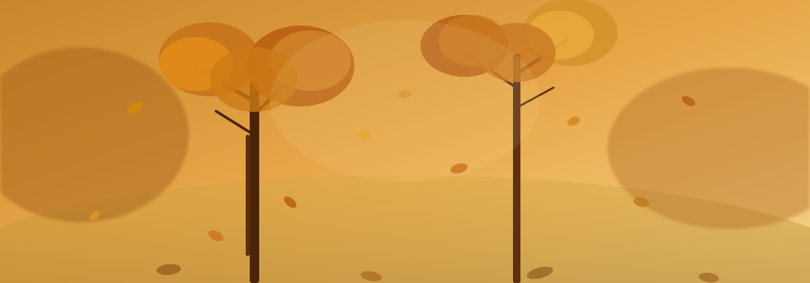
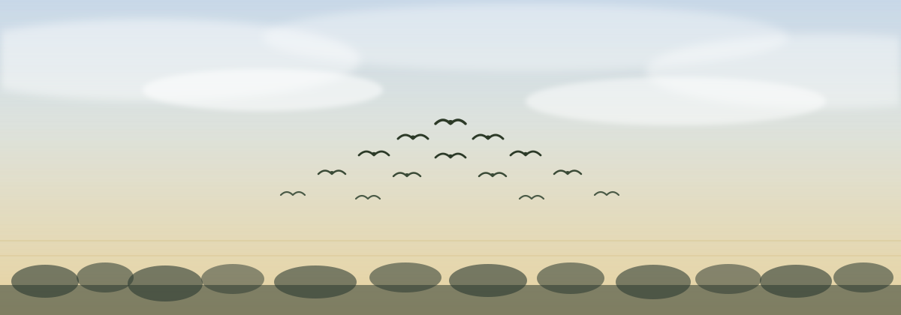
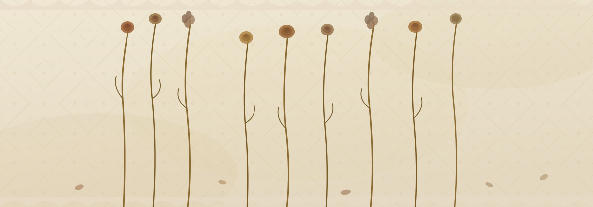

✦ ✝ ✦
A Collection of Poems
"The light shines in the darkness,
and the darkness has not overcome it."
— John 1:5
✦ ✝ ✦
Finding beauty and meaning in natural cycles


✦ ✝ ✦
Finding strength through difficulty and spiritual growth
✦ ✝ ✦
Contemplating life's passage and duality
✦ ✝ ✦
Bonds that transcend presence and absence
✦ ✝ ✦
Navigating relationships and difficult choices

✦ ✝ ✦